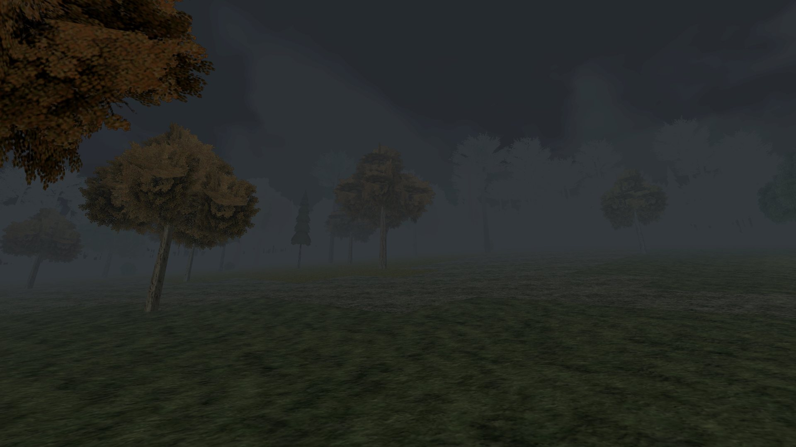

Cara de PlayStation 1
Polígonos duros, texturas em pixel art e personagens montados como nos primeiros jogos 3D. Jogue no 3D LIMPO ou no PS1 RETRÔ, em 320×240 com dithering de verdade.

Alguma coisa anda no mato.
Um survival horror em terceira pessoa com cara de PlayStation 1, numa cidadezinha de colonos alemães na serra gaúcha. A neblina não levanta, a criação aparece seca no potreiro e ninguém sai de casa depois que escurece. Menos você.
Grátis · no navegador · sem instalar nada
Nas últimas noites, galinhas, patos e até ovelhas apareceram mortos em Teewald. Todos com dois furos no pescoço e sem uma gota de sangue.
A Prefeitura diz que é graxaim. A inspetoria veterinária fala em cachorro. A repórter que veio de Porto Alegre já contou onze casos em dez dias, e ninguém quer falar com ela.
Você não é daqui. Chegou numa tarde de neblina, pelo calçadão do Rio Cadeia, e resolveu ficar para descobrir o que anda no mato. A cidade não gosta de perguntas, mas cada morador sabe um pedaço da história.
Quando eu acendi a lanterna, os olhos brilharam vermelho. Aí sumiu no mato, aos pulos.
Câmera por cima do ombro, munição contada e uma cidade inteira para atravessar no escuro. Do jeito que os jogos de terror eram nos anos 90, só que no navegador.
Polígonos duros, texturas em pixel art e personagens montados como nos primeiros jogos 3D. Jogue no 3D LIMPO ou no PS1 RETRÔ, em 320×240 com dithering de verdade.
Ruas, rio, praça e morros vêm de mapas reais. Cerca de 600 construções nos contornos de verdade: casas de enxaimel, comércio, fábricas de calçados e a Igreja Matriz.
Inventário que pausa o jogo, armas brancas que gastam e quebram, pedra para arremessar e cuca com chá de marcela para remendar a vida.
Doze capítulos, cada um com uma história que os mais velhos só contam baixinho, perto do fogão. Qual é qual, você descobre lá dentro.
Tarde encoberta, noite fechada, garoa e tempestade com o trovão chegando depois do clarão. A lanterna alcança poucos metros, e o som vem de todos os lados.
No PC, no celular ou no tablet, com teclado e mouse, controle ou toque. Em português, inglês, espanhol e alemão. O progresso fica salvo sozinho.

Herval vem de erva-mate. Teewald, em hunsrik: mato do chá. Bonito, não é? Mas os antigos tinham outro respeito por esse mato. Ninguém entrava nele depois do sol posto.

O ônibus para Novo Hamburgo não passa desde o meio-dia. Já que você vai ficar, fique de olho no mato.
▶ Jogar agora Grátis · PC, celular e controle